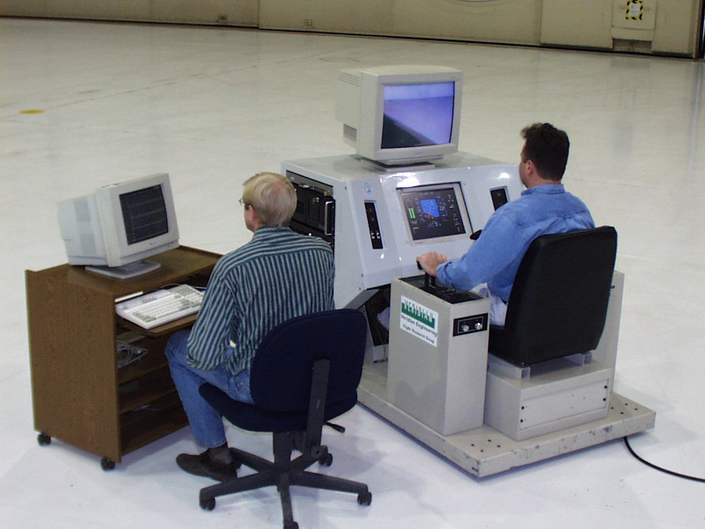
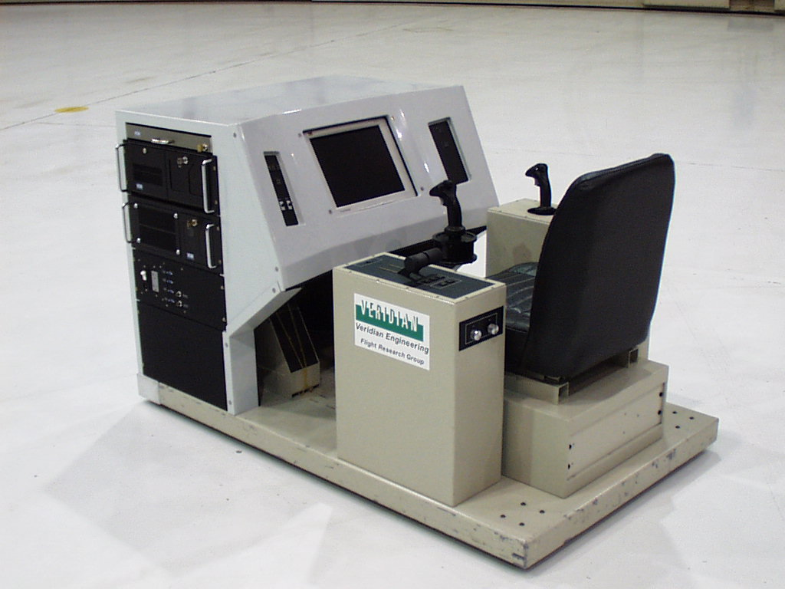
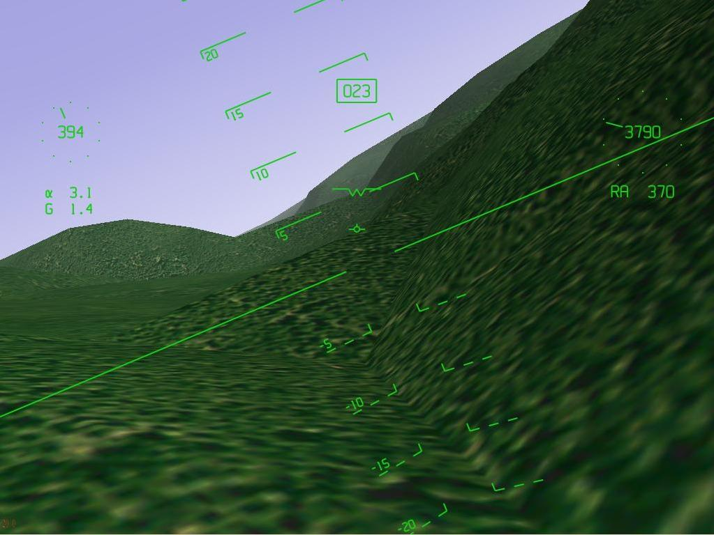
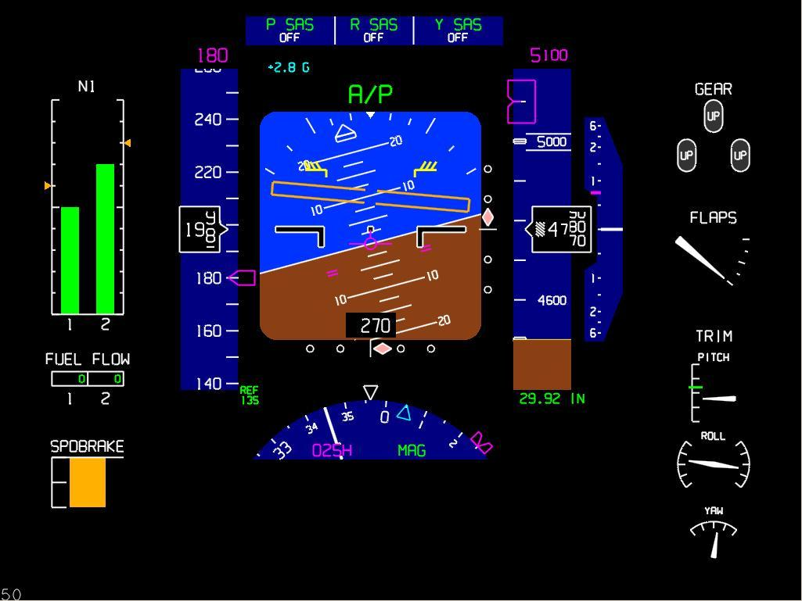

AboutHomeIntroduction Overview Features Screenshots DownloadsDownload ApplicationDownload Scenery Download Source Code FlightGear CD's FTP Mirrors SupportVersion SummaryHardware Requirements Documentation Places to Fly Lists, Forums, and IRC FAQ LinksRelated WebsitesRelated Projects ContributeContributingCVS Resources Goals Contributors Design Proposals Events |
Genesis 3000 System DescriptionVeridian Engineering Division Flight Research Group OverviewGenesis 3000 is a fixed-base, programmable flight simulator. The entire simulation model is implemented using Simulink®, a popular graphical block diagram programming system, which is part of Matlab®, by The Math Works, Inc. Simulation engineers, aircraft designers, and students can implement changes to the simulation in block diagram form and generate an executable file using Matlabs Real Time Workshop. There is no "hand coding" required for the simulation model.  Figure 1 Genesis 3000 uses two Pentium III-based computers, which communicate using a MIL-STD-1553B data bus. One computer runs the simulation model and user interface, and the other computer draws the head-up and head-down displays. The keyboard, mouse, and monitor for the Model Computer are on a table next to the Genesis 3000 and are referred to as the Engineers Station. The Display Computer operates as an embedded system and is controlled from the Model Computer through the 1553 bus. ControlsGeneral Layout Genesis 3000 is configured as a generic aircraft cockpit as shown in Figure 2. Figure 2 Inceptors Genesis 3000 is equipped with center and side sticks, rudder pedals, and toe brakes. All primary inceptors use force sensors as inputs to the Model Computer. The center and side sticks have rubber mounts to provide a limited amount of control motion. Dual throttles are mounted on the left side console. Secondary Controls and Switches The following secondary controls and switches are provided:
DisplaysSceneryThe scenery and out-the-window view for Genesis 3000 are generated using FlightGear, a popular public-domain flight simulation package released under the GNU General Public License (GPL). The scenery is generated from public DOD digital elevation maps of the continental United States and from public FAA airport data. Detailed information on FlightGear and the GPL may be found at www.flightgear.org and www.gnu.org, respectively. Head-Up Display The available HUD formats are:
 Figure 3 Head-Down Display The Head-Down Display (HDD) consists of a B777-style Primary Flight Display (PFD) surrounded by generic engine, gear, flap, speedbrake, and trim indicators. The Default Genesis 3000 HDD is shown in Figure 4.  Figure 4 |